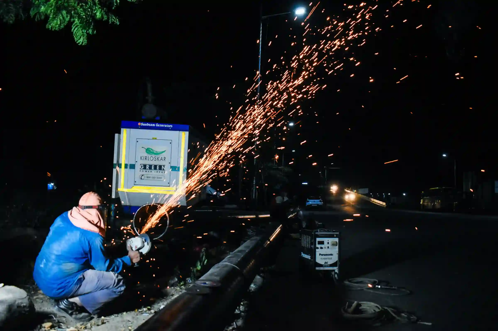
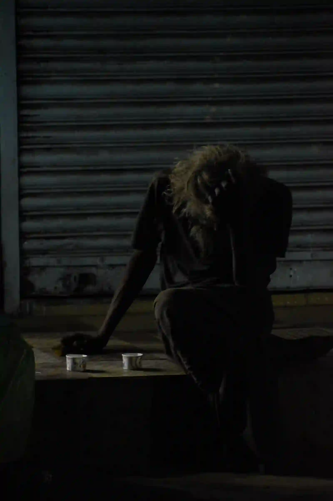
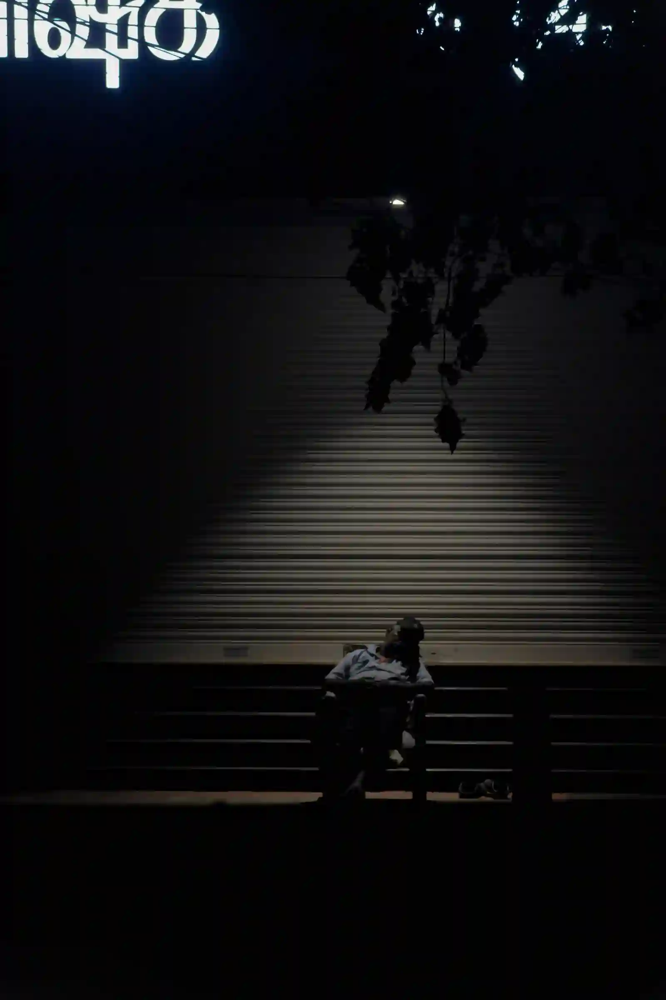
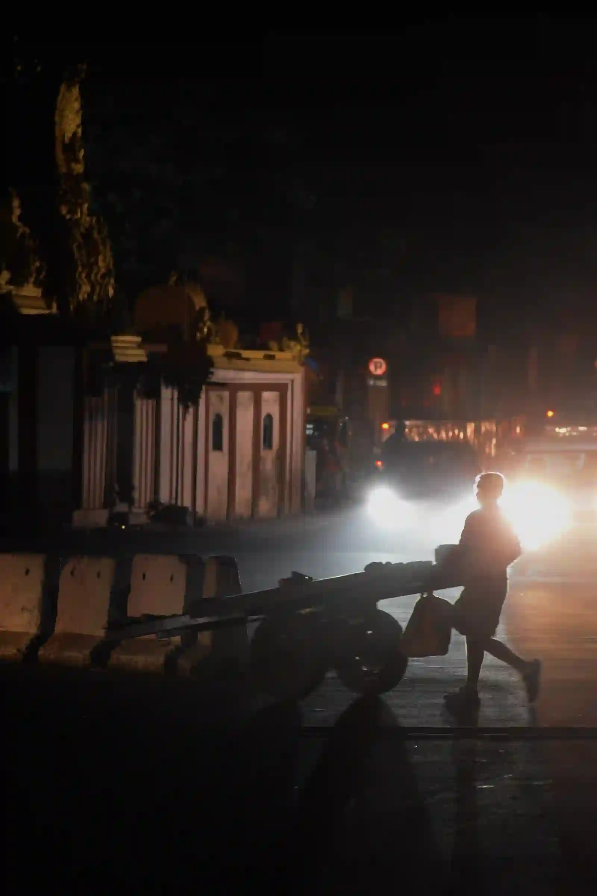
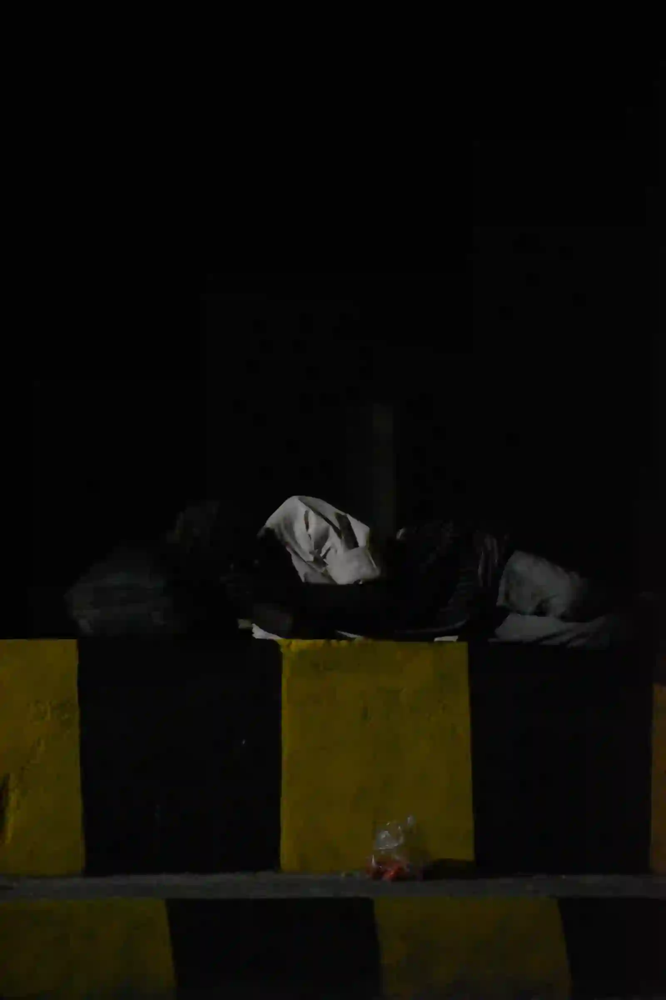
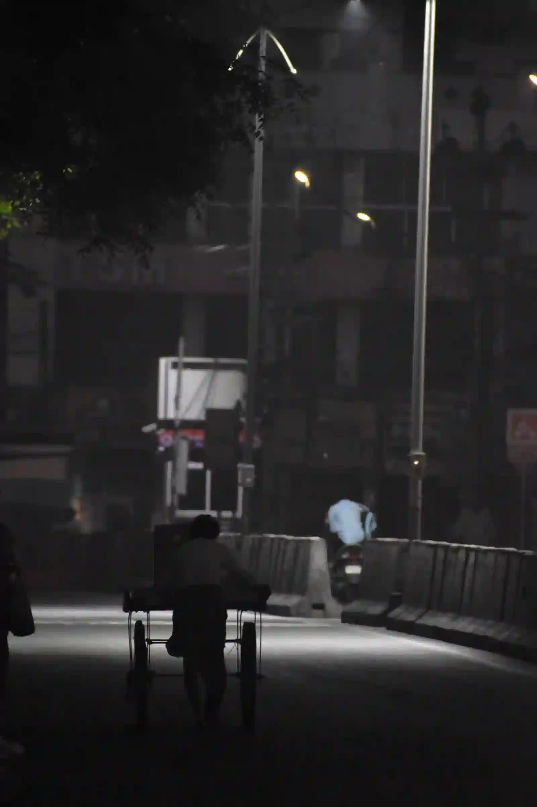
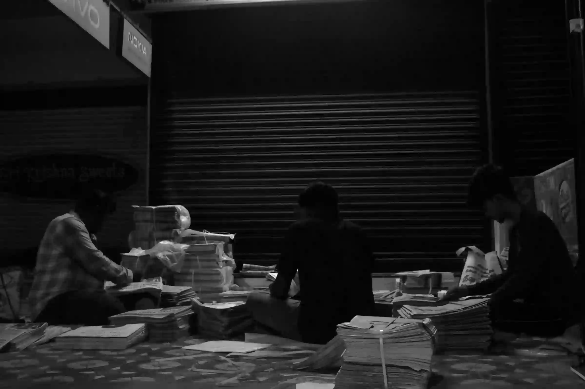
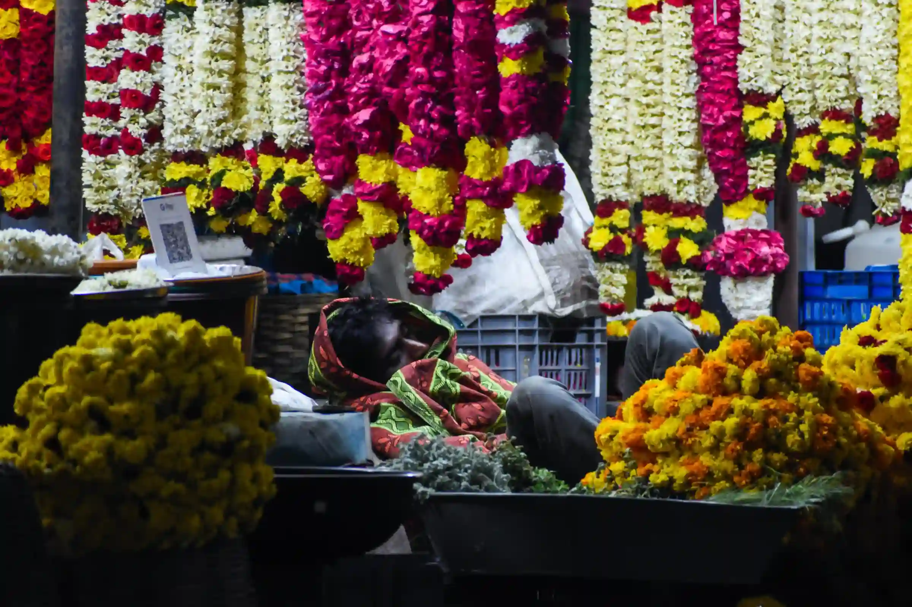
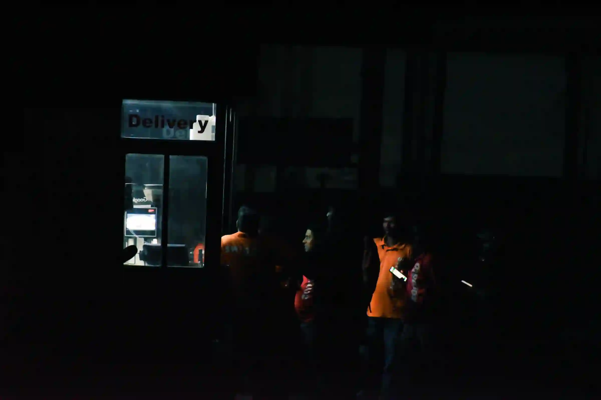

Common Man
The Dark Night
When the light goes off, the true colours of the streets arise. These colours don't always belong to the mighty heroes; sometimes, they belong to the common man. Their strength, resilience and quiet existence define the soul of a city after nightfall. In this series, I have tried to capture the untold colours of darkness — stories of everyday people who are, in their own quiet way, the true heroes of the dark night.
The streets at night belong to many who remain invisible during the day — an old man sitting alone outside a tea shop, a homeless man finding a place to rest, workers pushing carts through empty streets, delivery riders moving through the darkness, and florists waiting inside their shops for customers who may arrive at any hour. Each of them becomes a small but essential part of the city after everyone else has gone to sleep.
They may be ordinary people, but each carries a battle that may be completely unknown to those around them. Some battles are physical, some mental, and some are simply about surviving another night. They work, wait, endure and move forward without recognition.
"The night reveals a different side of the city — one filled with people whose names we may never know and whose stories we may never hear. They are not the mighty heroes we usually celebrate. They are the common men and women of the night. And to me, they are nothing less than superheroes."








